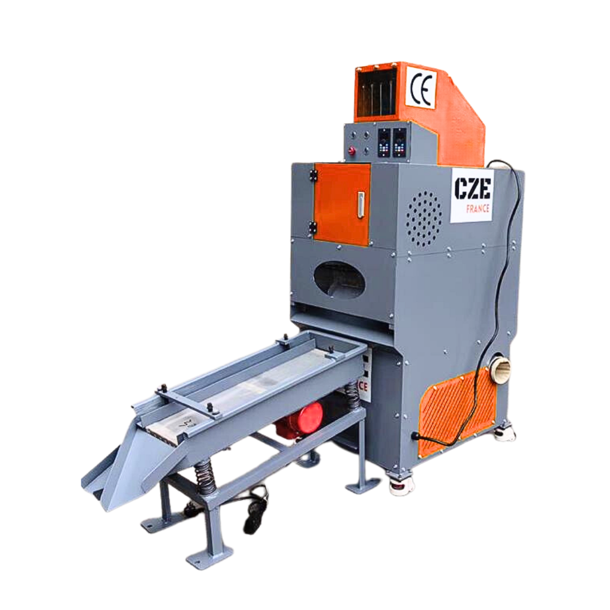
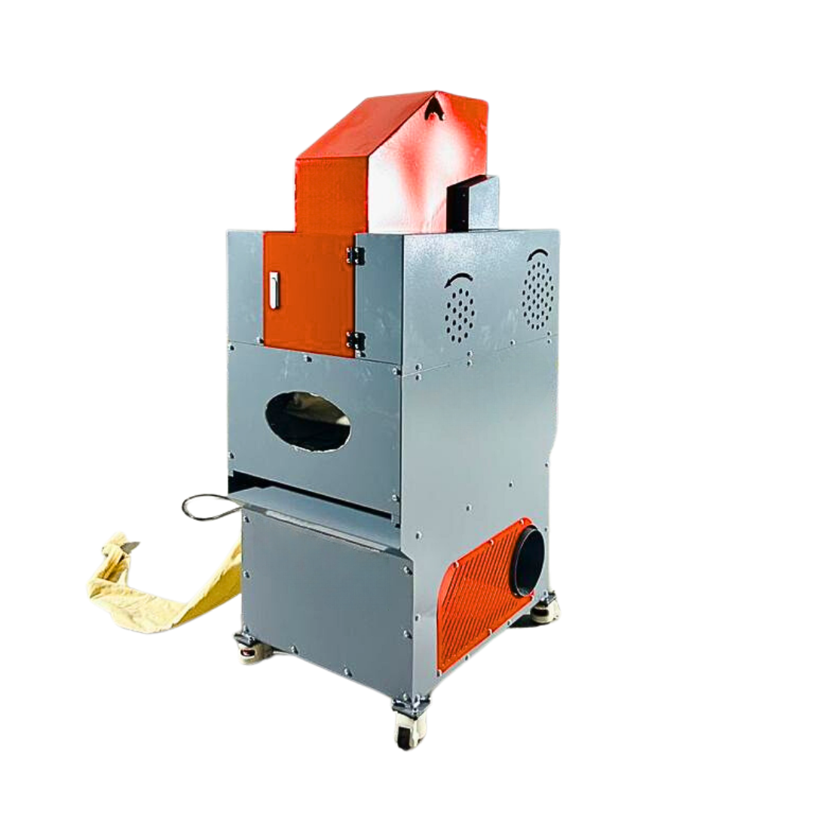
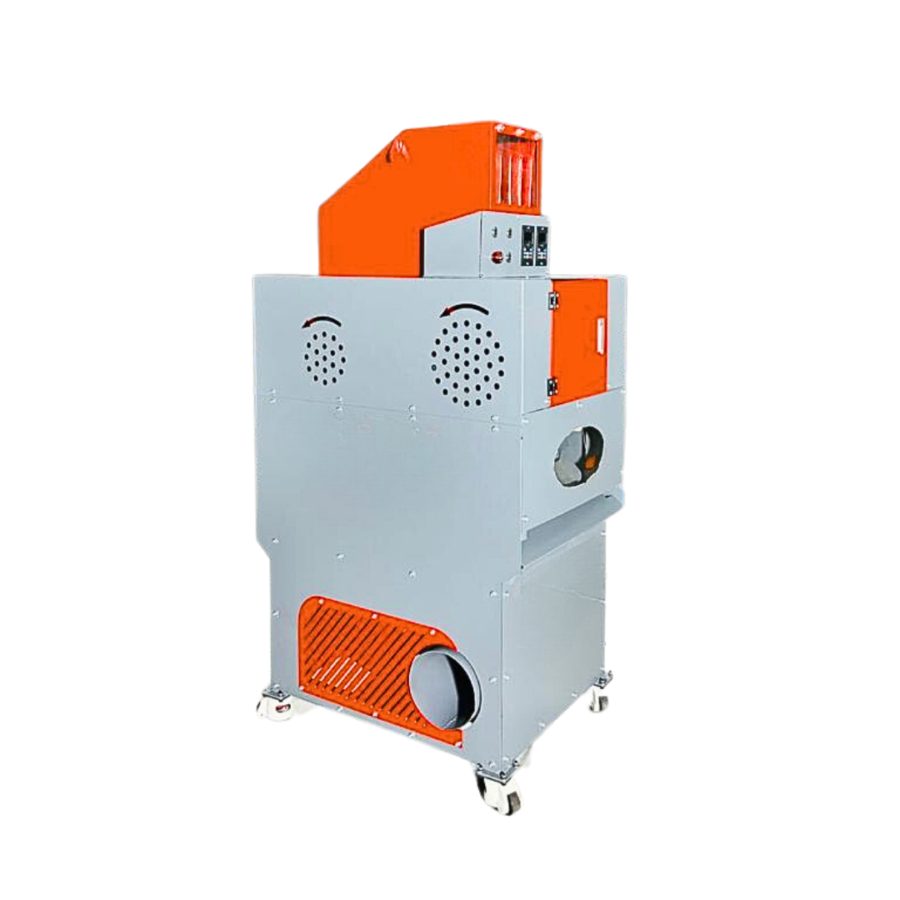
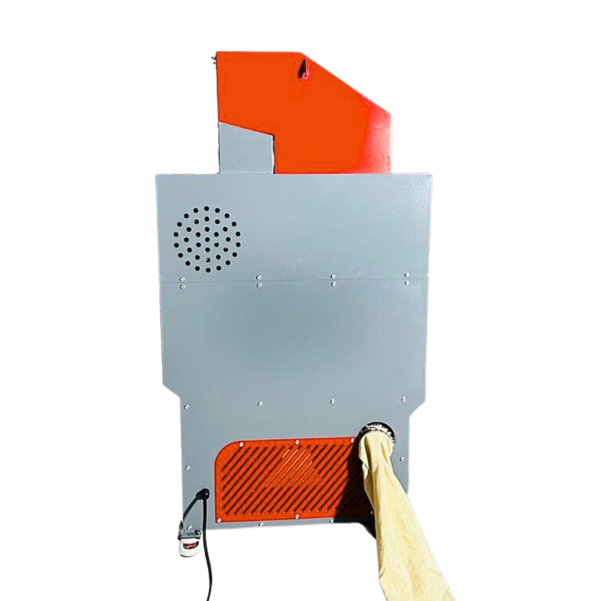
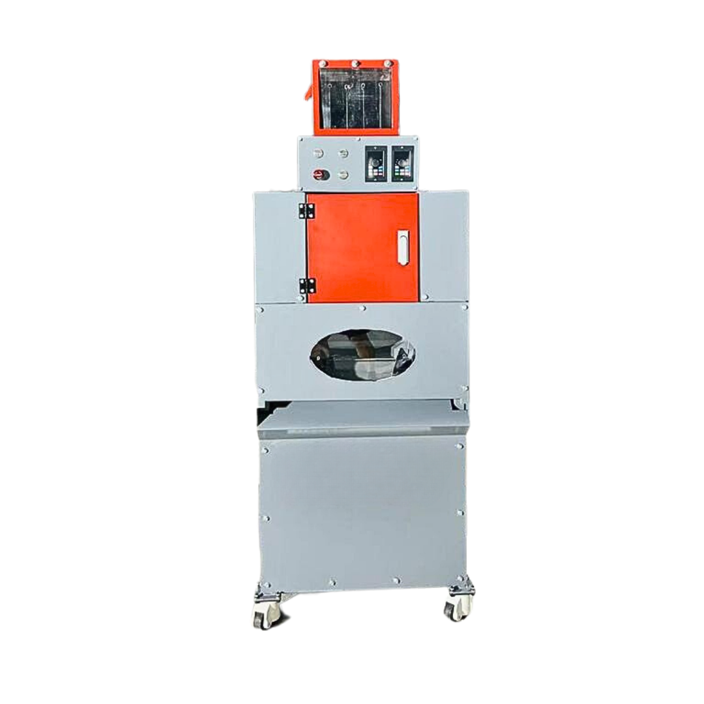

Le séparateur de cuivre V-C02 transforme vos câbles en granulés de cuivre pur et de plastique, avec un taux de séparation de 99,99 %. Un investissement rentable pour tout centre VHU.

Le V-C02 traite une grande variété de câbles — câbles automobiles, câbles de communication et autres — pour une performance stable et une utilisation simple au quotidien.
Le séparateur de cuivre V-C02 est conçu pour transformer les câbles en déchets en granulés de cuivre et de plastique, prêts pour le recyclage. Le processus est entièrement automatisé et repose sur quatre composants principaux :




Dans les centres de traitement des véhicules hors d'usage (VHU), le cuivre est l'un des matériaux les plus précieux et les plus recherchés sur le marché mondial. Mais sa valeur dépend directement de sa pureté. Le cuivre non dénudé — encore entouré de son isolant plastique — se vend généralement entre 1 et 1,50 € le kilo. Le cuivre dénudé, lui, peut atteindre jusqu'à 6,50 €/kg selon sa qualité.
Prenons un centre VHU traitant 10 véhicules par jour, soit environ 20 kg de cuivre quotidiens. Vendu non dénudé, ce cuivre rapporte environ 30 € par jour. Dénudé grâce au séparateur, il peut être revendu jusqu'à 130 € par jour. Sur une année de 250 jours travaillés, cela représente une différence de l'ordre de 25 000 € — simplement en augmentant la pureté du cuivre récupéré.
Au-delà du gain financier, le séparateur de cuivre s'inscrit dans une démarche durable. En maximisant la récupération et la revente du cuivre pur, les centres VHU réduisent leurs déchets, limitent leur empreinte carbone et soutiennent une économie circulaire. Dans un marché concurrentiel, se doter d'un séparateur de cuivre peut être le facteur déterminant qui place votre centre un pas en avant vers l'avenir du recyclage automobile.
Le séparateur V-C02 atteint un taux de séparation du cuivre de 99,99 %, ce qui permet de revendre un cuivre dénudé de très haute qualité, à une valeur nettement supérieure au cuivre non dénudé.
Il traite une large gamme de câbles de 0,1 à 30 mm : câbles automobiles, câbles de communication et autres types de câbles électriques.
La machine traite de 20 à 40 kg de câbles par heure, pour une puissance installée de 4,2 kW.
En valorisant le cuivre dénudé (jusqu'à 6,50 €/kg contre ~1,50 €/kg non dénudé), un centre traitant ~20 kg/jour peut générer plusieurs dizaines de milliers d'euros de gain annuel supplémentaire, amortissant rapidement la machine.
Le tamis séparateur en sortie est proposé en option à 1 200 € HT, en complément de la machine à 7 920 € HT (9 504 € TTC).
Configurez votre solution ou décrivez-nous votre besoin : notre équipe vous répond avec un devis détaillé, adapté à votre site.
Demander un devis